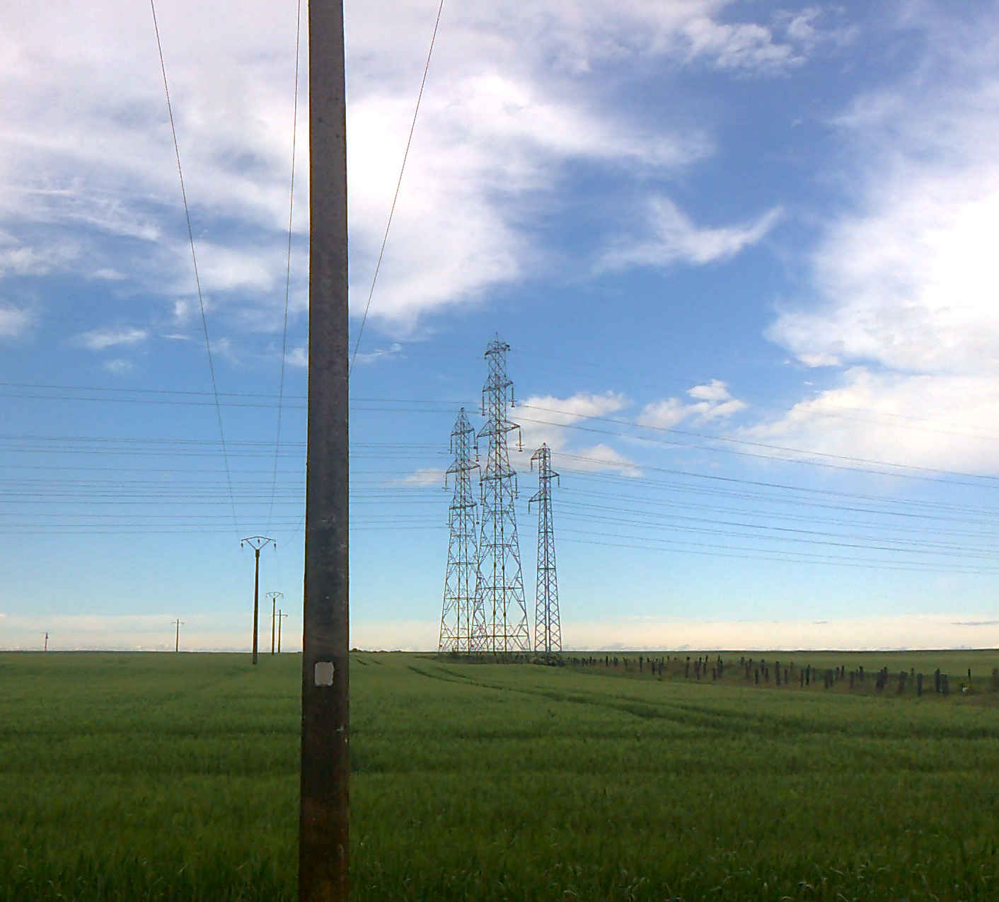

L'énergie solaire est une source d'énergie dépendante du soleil. Cette dernière est inépuisable, gratuite et disponible partout. Elle est donc placée dans la catégorie des énergies renouvelables.
Elle est utilisée pour fabriquer de l'électricité à partir de panneaux photovoltaïques ou des centrales solaires thermiques, grâce à la lumière du soleil captée par des panneaux solaires.
L'énergie éolienne
L'énergie éolienne est une source dépendante du vent. Cette dernière est inépuisable, disponible partout et gratuite.
Elle est classée dans la catégorie des énergies renouvelables.
Elle est utilisée pour fabriquer de l'électricité dans des éoliennes grâce à la force du vent. Il est possible de retrouver des éoliennes sur l’eau dites éoliennes « offshore » et installées en pleine mer en bordure des côtes.
L'énergie géothermique
L'énergie géothermique vient de la chaleur de la Terre. Elle permet de fabriquer de l'électricité dans les centrales géothermiques, grâce à l'eau très chaude des nappes situées dans le sous-sol de la Terre.
L'énergie nucléaire
L'énergie nucléaire dépend de l'uranium, un combustible fissile. Elle permet de produire de l'électricité, dans les centrales nsucléaires, grâce à la chaleur dégagée par la fission d'atomes d'uranium.
L'énergie thermique à flamme
Une centrale thermique à flamme produit de l'électricité à partir de la vapeur d'eau produite grâce à la chaleur dégagée par la combustion de gaz, de charbon, de fioul, qui met en mouvement une turbine reliée à un alternateur.
L'énergie hydraulique
LL'énergie hydraulique permet de fabriquer de l'électricité grâce à la force de l'eau. Cette force dépend soit de la hauteur de la chute d'eau (cas des centrales de haute ou moyenne chute), soit du débit des fleuves et des rivières (centrales au fil de l'eau).
Cette énergie dépend du cycle de l'eau et est la plus importante source d'énergie renouvelable et la plus ancienne (exploitée depuis la fin du 19ème siècle).
Il existe également des centrales utilisant la force de la marée comme par exemple l’usine marée-motrice de La Rance. Une autre source d’énergie hydraulique consiste à utiliser des hydroliennes utilisant les courants marins, « éoliennes » en fond de mer.
Les pylônes électriques
L'électricité, une fois fabriquée, est transportée vers les lieux de consommation, par un réseau de transport, via des lignes électriques aériennes ou souterraines.
Ce réseau exploité et développé par RTE (Réseau de Transport d’Electricité) comporte 105 000 km de lignes Haute Tension de type B (HTB : de 400 000 Volts à 63 000 Volts), dont notamment 46 lignes transfrontalières.
Une ligne aérienne (HT) compte 3 câbles électriques les uns à côté des autres. Un câble supplémentaire (câble de garde) est disposé au-dessus de la ligne de transport et la protège de la foudre.
Les pylônes HTB maintiennent les câbles à une certaine distance du sol afin de garantir la sécurité des personnes et des installations à proximité des lignes.
Le long des lignes, l'énergie électrique est guidée, répartie et sa tension abaissée successivement dans les postes de transformation. Ainsi, elle peut alimenter les postes source du réseau de distribution et être livrée et adaptée aux besoins des consommateurs.

Le poste source
Le poste source est placé à la jonction des lignes HTB (réseau de transport RTE) et HTA, Haute tension de type A : tension comprise entre 50 000 Volts et 1 000 Volts (réseau de distribution exploité par ERDF).
Le poste source permet d’abaisser la tension de 90 000 Volts à 20 000 Volts (dans la majeure partie des cas). Les lignes HTA souterraines ou aériennes, issues des postes sources sont appelées « départs HTA ».
Le réseau de distribution
Le réseau de distribution est constitué d’un réseau HTA et d’un réseau BT.
Plusieurs transformateurs abaissent l'électricité HTA à BT (Basse Tension : tension 400 Volts / 230 Volts). Ils assurent l'alimentation en électricité des clients sur un secteur précis. Ils injectent de la puissance dans le réseau tout en assurant sa protection (maîtrise de la tension…).
Le réseau BT est issu des postes de transformation HTA/BT.Chaque circuit BT est protégé par un jeu de fusibles placé en sortie de transformateur.
Le branchement se situe entre le réseau BT et le point de départ de l'installation intérieure de l'utilisateur. Sa protection est assurée par des fusibles côté distributeur et un disjoncteur côté utilisateur (représentant la frontière entre le réseau et l’installation privée du client).
Le Smart Grid
Le Smart Grid est un réseau « intelligent » qui optimise la production, la distribution et la consommation énergétiques.
Autrefois uniquement chargé de distribuer l'électricité, le réseau doit évoluer pour prendre en compte les nouveaux usages, l'essor des énergies renouvelables et la production d'électricité par les particuliers.
Le compteur Linky
Le compteur Linky est la nouvelle génération de compteurs communicants d’ERDF. Il peut recevoir, envoyer des données et permet la réalisation d’interventions à distance sans déplacement d’un technicien.
Installés sur le territoire français, les compteurs seront autant de capteurs pour aider à l’observation, au pilotage du réseau BT ainsi qu’à la détection des pannes éventuelles et au pilotage des équipements électriques dans la maison.
Les spirales de couleurs
On voit parfois sur les lignes électriques des spirales colorées, placées dans les couloirs de migration des grands oiseaux, pour les alerter. En effet les oiseaux pourraient heurter les lignes et se blesser, voire s’électrocuter si l’envergure de leurs ailes les amenait à toucher deux câbles. On trouve aussi des balises de couleur à proximité des aérodromes, pour mieux visualiser les lignes.